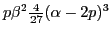
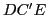
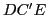
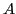
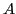

Next: Properties of the evolute Up: Circle of curvature. Center Previous: Center of curvature Contents Index
The locus of the centers of curvature of a given curve is called
the evolute of that curve.
Consider the circle of curvature corresponding to a point  on a curve.
If
on a curve.
If  moves along the given curve, we may suppose the corresponding
circle of curvature to roll along the curve with it, its radius
varying so as to be always equal to the radius of curvature
of the curve at the point
moves along the given curve, we may suppose the corresponding
circle of curvature to roll along the curve with it, its radius
varying so as to be always equal to the radius of curvature
of the curve at the point  . The curve
. The curve  in Figure 14.4
described by the center of the circle is the evolute of .
in Figure 14.4
described by the center of the circle is the evolute of .
It is instructive to make an approximate construction of the evolute of a curve by estimating (from the shape of the curve) the lengths of the radii of curvature at different points on the curve and then drawing them in and drawing the locus of the centers of curvature.
Formula (14.7) gives the coordinates of any
point
 on the evolute expressed in terms of the coordinates
of the corresponding point
on the evolute expressed in terms of the coordinates
of the corresponding point  of the given curve. But
of the given curve. But
 is a function of
is a function of  ; therefore
; therefore
To find the ordinary rectangular equation of the evolute
we eliminate  between the two expressions. No general
process of elimination can be given that will apply in all
cases, the method to be adopted depending on the form of the
given equation. In a large number of cases, however, the
student can find the rectangular equation of the evolute by
taking the following steps:
between the two expressions. No general
process of elimination can be given that will apply in all
cases, the method to be adopted depending on the form of the
given equation. In a large number of cases, however, the
student can find the rectangular equation of the evolute by
taking the following steps:
General directions for finding the equation of the evolute in rectangular coordinates.
Solution. .
First step. , .
Second step.
,
 .
.
Third step ; or, .
Remembering that  denotes the abscissa and
denotes the abscissa and  the
ordinate of a rectangular system of coordinates,
we see that the evolute of the parabola is the semi-cubical
parabola ; the centers of curvature for
the
ordinate of a rectangular system of coordinates,
we see that the evolute of the parabola is the semi-cubical
parabola ; the centers of curvature for  ,
,  ,
,  ,
,  being at ,
being at ,  , , respectively.
, , respectively.
Solution.
 ,
.
,
.
First step.
,
 .
.
Second step. , .
Third step.
, the equation of the evolute
of the ellipse ,  , , , are the
centers of curvature corresponding to the points , ,
, , , are the
centers of curvature corresponding to the points , ,  , ,
on the curve, and
, ,
on the curve, and  , , correspond to the points
, , correspond to the points
 , , .
, , .
When the equations of the curve are given in parametric form,
we proceed to find
 and
and
 ,
as in §12.5, from
,
as in §12.5, from
Solution.
,
 ,
,
.
Substituting in above formulas (14.12) and then in (14.9), gives
,
,
.
Substituting in above formulas (14.12) and then in (14.9), gives
The point is common to the given curve and its evolute. The given curve (a semi-cubical parabola) lies entirely to the right and the evolute entirely to the left of .
The circle of curvature at
,
where  , will have its center at
on the evolute and radius
. To verify our work, find radius of curvature at . From
(12.5), we get
, will have its center at
on the evolute and radius
. To verify our work, find radius of curvature at . From
(12.5), we get
Solution. As in Example 12.5.2, we get

![\includegraphics[height=4cm,width=6cm]{evolute-of-ellipse.eps}](img3737.png)